Matrix Calculus 入门指南
(一) 理解矩阵求导本质，就是整理多元函数对于多元变量的偏导数
介绍了九种函数的求导方式：当函数结果为（标量、向量、矩阵）,以及输入变元为（标量、向量、矩阵）时，共九种情况自由组合
介绍向量化思想，即把矩阵直接拉伸成列向量，可以在向量的基础上求导
介绍Matrix求导后 可以写成 Jacobian矩阵和梯度矩阵两种形式，互为转置，数学上的一种定义好的规范罢了。
- 具体而言Jacobian矩阵会把向量化后的输入变量转置一次之后再进行求导操作
- 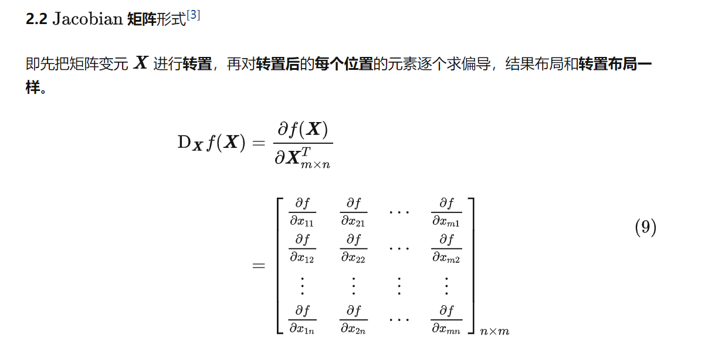
- 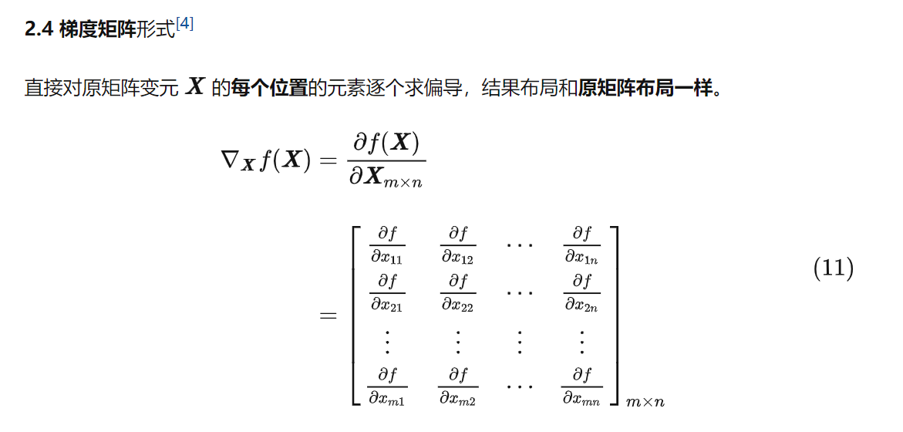
介绍分子分母布局的本质
- 分子布局的本质：分子是标量、列向量、矩阵向量化后的列向量；分母是标量、列向量转置后的行向量、矩阵的转置矩阵、矩阵向量化后的列向量转置后的行向量。
- 分母布局的本质：分子是标量、列向量转置后的行向量、矩阵向量化后的列向量转置后的行向量；分母是标量、列向量、矩阵自己、矩阵向量化后的列向量。
- 其实分子布局就相当于Jacobian矩阵形式，分母布局就相当于梯度矩阵形式
(二) 矩阵层面的数学公式推导
文章的叙述思路保持一致，当函数结果为（标量、向量、矩阵）,以及输入变元为（标量、向量、矩阵），有不同的公式推导
一. 向量变元的实值标量函数
公式中的x请自动默认为列向量，证明可以查看上个超链接。
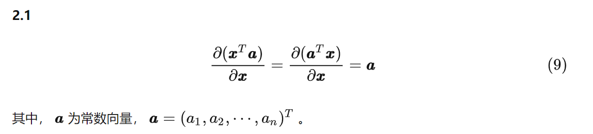
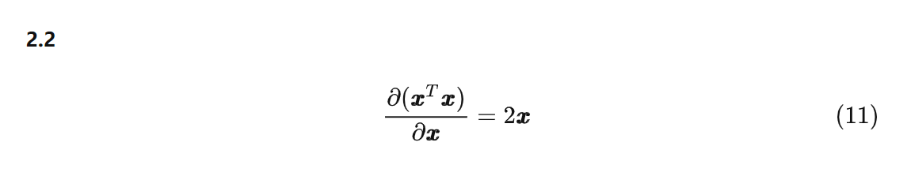
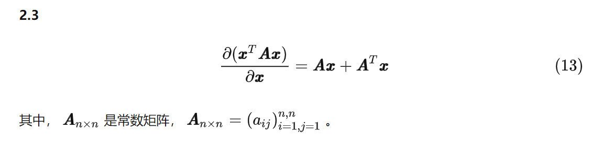
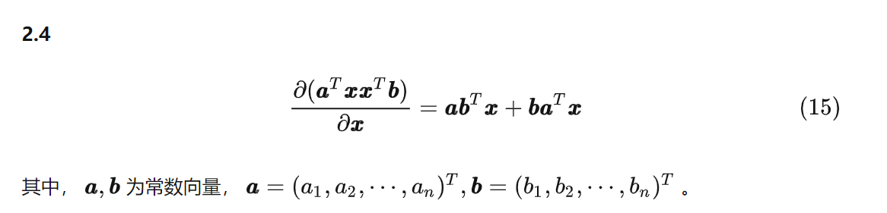
二. 矩阵变元的实值标量函数
公式中的X请自动默认为大小为m*n的矩阵，证明可以查看上个超链接。
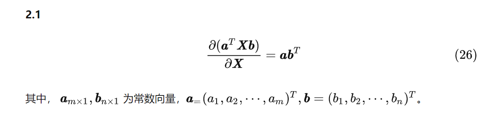
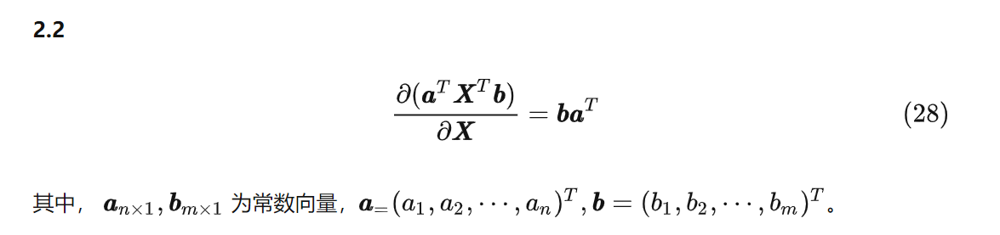
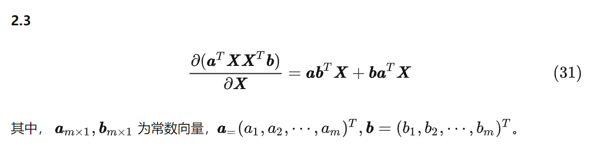
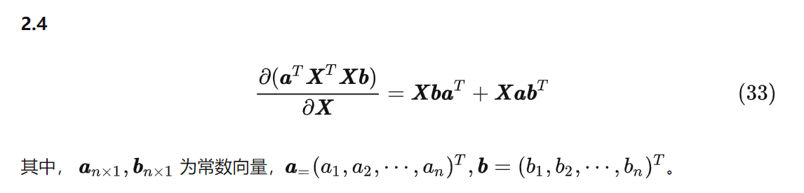
2.4可以通过 2.3加上Jacobian矩阵和梯度矩阵形式互为转置，快速证明。
Jacobian矩阵和梯度矩阵形式互为转置，可以表示为：
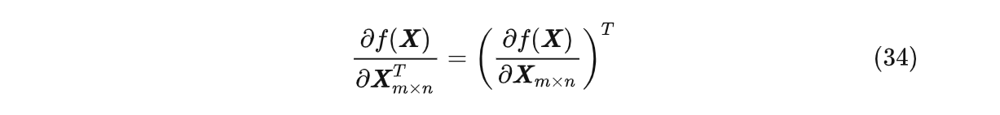